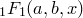

In the previous chapter (Section 1.8.9), linked axes were introduced as a mechanism by which several axes on a single plot could be set to have the same range, or to be algebraically related to one another. Another common use for them is to make several plots on a multiplot canvas share common axes. Just as the following statement links two axes on a single plot to one another
set axis x2 linked x
axes on the current plot can be linked to those of previous plots which are already on the multiplot canvas using syntax of the form:
set axis x2 linked item 2 x
A common reason for doing this is to produce galleries of side-by-side plots. The following series of commands would produce a  grid of plots, with axes only labelled along the bottom and left sides of the grid:
set multiplot
set nodisplay
width=5.4
set width width
set xrange [0:23.999]
set yrange [0:0.11]
set nokey
set texthalign left
set textvalign centre
# Plot 1 (bottom left)
set xlabel "$x$"
set ylabel ""
set label 1 "(c) fsteps" at graph width*0.03 , graph width*gold_ratio*0.9
plot "examples/ex_barchart1.dat" with fsteps, "" with points
set axis x linked item 1 x
set axis y linked item 1 y
# Plot 2 (bottom right)
set origin 1*width, 0*width*gold_ratio
set yformat ""
set label 1 "(d) histeps" at graph width*0.03 , graph width*gold_ratio*0.9
plot "examples/ex_barchart1.dat" with histeps, "" with points
# Plot 3 (top left)
set origin 0*width, 1*width*gold_ratio
set xformat "" ; set xlabel ""
unset yformat ; set ylabel texify(poissonPDF(x,18))
set label 1 "(a) impulses" at graph width*0.03 , graph width*gold_ratio*0.9
plot "examples/ex_barchart1.dat" with impulses, "" with points
# Plot 4 (top right)
set origin 1*width, 1*width*gold_ratio
set yformat "" ; set ylabel ""
set label 1 "(b) steps" at graph width*0.03 , graph width*gold_ratio*0.9
plot "examples/ex_barchart1.dat" with steps, "" with points
# Now that we are finished preparing multiplot, turn display on
set display
refresh